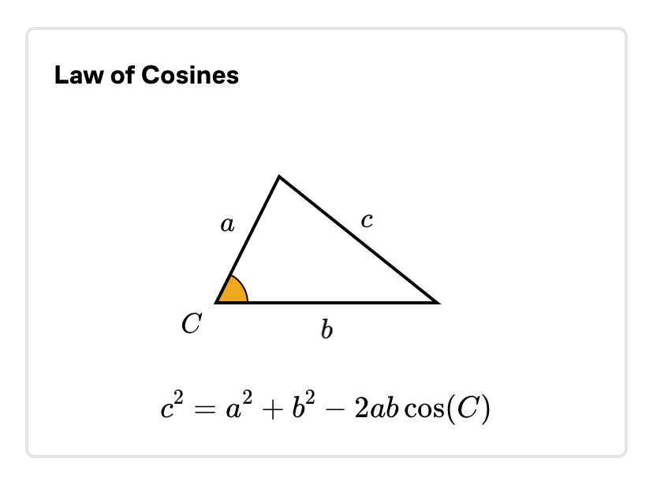
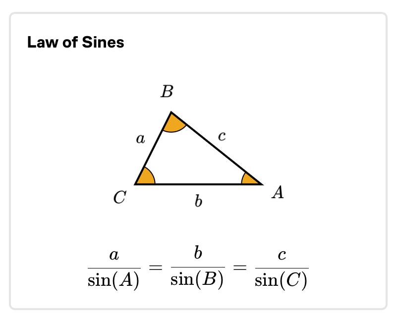

THINGS TO REMEMBER
- Basic Identities
- -ve angle example : sin(-A) etc
- Trigonometric ratios of (90 - A), example : sin(90 - A) etc
- Trigonometric ratios of (90 + A), example : sin(90 + A) etc
- Trigonometric ratios of (180 - A), example : sin(180 - A) etc
- Trigonometric ratios of (180 + A), example : sin(180 + A) etc
- Trigonometric ratios of (270 - A), example : sin(270-A) etc
- Trigonometric ratios of (270 + A), example : sin(270 + A) etc
- Trigonometric ratios of (360 - A), example : sin(360-A) etc
- Sum of two angles, example : sin(A + B) etc
- Product of trigonometric ratios of angle sum, example : sin(A + B)sin(A - B) etc
- Double of angle, example : sin(2A) etc
- Half of angle, example :sin(A/2), example : etc
- Sum of three angles, example :sin(A + B + C) etc
- Triple of angle - sin(3A), example : etc
- Sum of trigonometric ratios of angle sum, example :sin(A + B) + sin(A - B) etc
- Sum of trigonometric ratios, example :sin(C) + sin(D) etc
- Trigonometric ratios of special angles, example :sin(15), sin(22.5) etc
- Special identities, example : sin(A)sin(60 - A)sin(60 + A) etc
- Ranges of sin, cos, tan, cot
- If A + B + C = 180, then sin(2A) + sin(2B) + sin(2C) etc
- Ranges of a*cos(x) + b*sin(x) + c
- Period of trigonometric ratios
- Sum of trigonometric ratios of angles in AP, example : sin(A) + sin(A + 2B) +... etc
- Product of trigonometric ratios of angles in GP - cos(A)cos(2A)...
- Special identities, example : \(\sin \dfrac{A}{2} \pm \cos \dfrac{A}{2}\) etc
- Special identities, example : \(\dfrac{\text{sin(2A)}} {\text{cos(2A) + 1}}\) etc
- General solutions of some trigonometric equations, example : sin(A) = 0 etc
- \(\sin x = \dfrac{1}{\csc x} \text{ or, } \csc x = \dfrac{1}{\sin x}\)
- \(\cos x = \dfrac{1}{\sec x} \text{ or, } \sec x = \dfrac{1}{\cos x}\)
- \(\cot x = \dfrac{1}{\tan x} \text{ or, } \tan x = \dfrac{1}{\cot x}\)
- \(\tan x = \dfrac{\sin x}{\cos x} \text{ or, } \cot x = \dfrac{\cos x}{\sin x}\)
- \(\sin^2 x + \cos^2 x = 1\)
- \(1 + \tan^2 x = \sec^2 x \)
- \(1 + \cot^2 x = \csc^2 x \)
- \(\sec x - \tan x = \dfrac{1}{\sec x + \tan x}\)
- \(\csc x - \cot x = \dfrac{1}{\csc x + \cot x}\)
-
 
- \(\sin(-x) = -\sin x \)
- \(\cos(-x) = \cos x \)
- \(\tan(-x) = -\tan x \)
- \( \csc(-x) = -\csc x\)
- \(\sec(-x) = \sec x\)
- \(\cot(-x) = -\cot x\)
- \(\sin\left(\dfrac{\pi}{2} - x\right) = \cos x\)
- \(\cos\left(\dfrac{\pi}{2} - x\right) = \sin x\)
- \(\tan\left(\dfrac{\pi}{2} - x\right) = \cot x\)
- \( \csc\left(\dfrac{\pi}{2} - x\right) = \sec x\)
- \(\sec\left(\dfrac{\pi}{2} - x\right) = \csc x\)
- \( \cot\left(\dfrac{\pi}{2} - x\right) = \tan x\)
- \(\sin\left(\dfrac{\pi}{2} + x\right) = \cos x\)
- \(\cos\left(\dfrac{\pi}{2} + x\right) = -\sin x\)
- \(\tan\left(\dfrac{\pi}{2} + x\right) = -\cot x \)
- \(\csc\left(\dfrac{\pi}{2} + x\right) = -\sec x\)
- \(\sec\left(\dfrac{\pi}{2} + x\right) = -\csc x\)
- \(\cot\left(\dfrac{\pi}{2} + x\right) = -\tan x\)
- \(\sin(\pi - x) = \sin x\)
- \(\cos(\pi - x) = -\cos x\)
- \(\tan(\pi - x) = -\tan x\)
- \(\csc(\pi - x) = \csc x\)
- \(\sec(\pi - x) = -\sec x\)
- \(\cot(\pi - x) = -\cot x\)
- \(\sin(\pi + x) = -\sin x\)
- \(\cos(\pi + x) = -\cos x\)
- \(\tan(\pi + x) = \tan x\)
- \(\csc(\pi + x) = -\csc x\)
- \(\sec(\pi + x) = -\sec x\)
- \(\cot(\pi + x) = \cot x\)
- \(\sin\left(\dfrac{3\pi}{2} - x\right) = -\cos x\)
- \(\cos\left(\dfrac{3\pi}{2} - x\right) = -\sin x\)
- \(\tan\left(\dfrac{3\pi}{2} - x\right) = \cot x\)
- \( \csc\left(\dfrac{3\pi}{2} - x\right) = -\sec x\)
- \(\sec\left(\dfrac{3\pi}{2} - x\right) = -\csc x\)
- \( \cot\left(\dfrac{3\pi}{2} - x\right) = \tan x\)
- \(\sin\left(\dfrac{3\pi}{2} + x\right) = -\cos x\)
- \( \cos\left(\dfrac{3\pi}{2} + x\right) = \sin x\)
- \(\tan\left(\dfrac{3\pi}{2} + x\right) = -\cot x\)
- \( \csc\left(\dfrac{3\pi}{2} + x\right) = -\sec x\)
- \(\sec\left(\dfrac{3\pi}{2} + x\right) = \csc x\)
- \( \cot\left(\dfrac{3\pi}{2} + x\right) = -\tan x\)
- \(\sin(2\pi - x) = -\sin x\)
- \(\cos(2\pi - x) = \cos x\)
- \(\tan(2\pi - x) = -\tan x\)
- \(\csc(2\pi - x) = -\csc x\)
- \(\sec(2\pi - x) = \sec x\)
- \(\cot(2\pi - x) = -\cot x\)
- \(\sin(A + B) = \sin A \cos B + \cos A \sin B\)
- \(\sin(A - B) = \sin A \cos B - \cos A \sin B\)
- \(\cos(A + B) = \cos A \cos B - \sin A \sin B\)
- \(\cos(A - B) = \cos A \cos B + \sin A \sin B\)
- \(\tan(A + B) = \dfrac{\tan A + \tan B}{1 - \tan A \tan B}\)
- \(\tan(A - B) = \dfrac{\tan A - \tan B}{1 + \tan A \tan B}\)
- \(\tan\left(\dfrac{\pi}{4} + A\right) = \dfrac{1 + \tan A}{1 - \tan A} = \dfrac{\cos A + \sin A}{\cos A - \sin A}\)
- \(\tan\left(\dfrac{\pi}{4} - A\right) = \dfrac{1 - \tan A}{1 + \tan A} = \dfrac{\cos A - \sin A}{\cos A + \sin A}\)
- \(\sin(A + B) \sin(A - B) = \sin^2 A - \sin^2 B\)
- \(\sin(A + B) \sin(A - B) = \cos^2 B - \cos^2 A\)
- \(\cos(A + B) \cos(A - B) = \cos^2 A - \sin^2 B\)
- \(\cos(A + B) \cos(A - B) = \cos^2 B - \sin^2 A\)
- \(\sin 2A = 2 \sin A \cos A\)
- \(\sin 2A = \dfrac{2 \tan A}{1 + \tan^2 A}\)
- \(\tan 2A = \dfrac{2 \tan A}{1 - \tan^2 A}\)
- \(\cot 2A = \dfrac{\cot^2 A - 1}{2 \cot A}\)
- \(\cos 2A = \cos^2 A - \sin^2 A\)
- \(\cos 2A = 1 - 2\sin^2 A, \quad \cos 2A = 2\cos^2 A - 1\)
- \(2\sin^2 A = 1 - \cos 2A, \quad 2\cos^2 A = 1 + \cos 2A\)
- \(\sin A = \pm \sqrt{\dfrac{1 - \cos 2A}{2}}, \quad \cos A = \pm \sqrt{\dfrac{1 + \cos 2A}{2}}\)
- \(\tan A = \pm \sqrt{\dfrac{1 - \cos 2A}{1 + \cos 2A}}, \quad \cos 2A = \dfrac{1 - \tan^2 A}{1 + \tan^2 A}\)
- \(\sin \dfrac{x}{2} = \sqrt{\dfrac{1 - \cos x}{2}}\)
- \(\cos \dfrac{x}{2} = \sqrt{\dfrac{1 + \cos x}{2}}\)
- \(\tan \dfrac{x}{2} = \sqrt{\dfrac{1 - \cos x}{1 + \cos x}}\)
- \(\sin (A + B + C) = \sin A \cos B \cos C + \cos A \sin B \cos C + \cos A \cos B \sin C - \sin A \sin B \sin C\)
- \(\cos (A + B + C) = \cos A \cos B \cos C - \cos A \sin B \sin C - \sin A \cos B \sin C - \sin A \sin B \cos C\)
- \(\tan (A + B + C) = \dfrac{\tan A + \tan B + \tan C - \tan A \tan B \tan C}{1 - \tan A \tan B - \tan B \tan C - \tan C \tan A}\)
- \(\cot (A + B + C) = \dfrac{\cot A + \cot B + \cot C - \cot A \cot B \cot C}{1 - \cot A \cot B - \cot B \cot C - \cot C \cot A}\)
- \(\sin 3x = 3 \sin x - 4 \sin^3 x\)
- \(\cos 3x = 4 \cos^3 x - 3 \cos x\)
- \(\tan 3x = \dfrac{3 \tan x - \tan^3 x}{1 - 3 \tan^2 x}\)
- \(\cot 3x = \dfrac{3 \cot x - \cot^3 x}{1 - 3 \cot^2 x}\)
- \(\sin (A + B) + \sin (A - B) = 2 \sin A \cos B\)
- \(\sin (A + B) - \sin (A - B) = 2 \cos A \sin B\)
- \(\cos (A + B) + \cos (A - B) = 2 \cos A \cos B\)
- \(\cos (A - B) - \cos (A + B) = 2 \sin A \sin B\)
- \(\sin C + \sin D = 2 \sin \left(\dfrac{C + D}{2}\right) \cos \left(\dfrac{C - D}{2}\right)\)
- \(\sin C - \sin D = 2 \sin \left(\dfrac{C - D}{2}\right) \cos \left(\dfrac{C + D}{2}\right)\)
- \(\cos C + \cos D = 2 \cos \left(\dfrac{C + D}{2}\right) \cos \left(\dfrac{C - D}{2}\right)\)
- \(\cos C - \cos D = -2 \sin \left(\dfrac{C + D}{2}\right) \sin \left(\dfrac{C - D}{2}\right)\)
- \(\tan A + \tan B = \dfrac{\sin(A + B)}{\cos A \cos B}\)
- \(\tan A - \tan B = \dfrac{\sin(A - B)}{\cos A \cos B}\)
- \(\cot A + \tan A = 2 \csc 2A\)
- \(\cot A - \tan A = 2 \cot 2A\)
- \(\sin 15^\circ = \cos 75^\circ = \dfrac{\sqrt{3} - 1}{2\sqrt{2}}\)
- \(\sin 75^\circ = \cos 15^\circ = \dfrac{\sqrt{3} + 1}{2\sqrt{2}}\)
- \(\tan 15^\circ = \cot 75^\circ = 2 - \sqrt{3}\)
- \(\tan 75^\circ = \cot 15^\circ = 2 + \sqrt{3}\)
- \(\tan 22 \dfrac{1}{2}^\circ = \cot 67 \dfrac{1}{2}^\circ = \sqrt{2} - 1\)
- \(\tan 67 \dfrac{1}{2}^\circ = \cot 22 \dfrac{1}{2}^\circ = \sqrt{2} + 1\)
- \(\sin 18^\circ = \cos 72^\circ = \dfrac{\sqrt{5} - 1}{4}\)
- \(\sin 36^\circ = \cos 54^\circ = \dfrac{\sqrt{10 - 2\sqrt{5}}}{4}\)
- \(\sin 54^\circ = \cos 36^\circ = \dfrac{\sqrt{5} + 1}{4}\)
- \(\sin 72^\circ = \cos 18^\circ = \dfrac{\sqrt{10 + 2\sqrt{5}}}{4}\)
- \(\sin A \cdot \sin (60^\circ - A) \cdot \sin (60^\circ + A) = \dfrac{1}{4} \sin 3A\).
- \(\cos A \cdot \cos (60^\circ - A) \cdot \cos (60^\circ + A) = \dfrac{1}{4} \cos 3A\).
- \(\tan A \cdot \tan(60^\circ - A) \cdot \tan(60^\circ + A) = \tan(3A)\)
- \(-1 \leq \sin A \leq 1 \quad \text{and} \quad -1 \leq \cos A \leq 1\)
- \(-\infty < \tan A < \infty \quad \text{and} \quad -\infty < \cot A < \infty\)
- \(\csc A \leq -1, \quad \csc A \geq 1\)
- \(\sec A \leq -1, \quad \sec A \geq 1\)
-
For the expression \( a \cos x + b \sin x + c \) :
- \(\text{Max. value} = c + \sqrt{a^2 + b^2}\)
- \(\text{Min. value} = c - \sqrt{a^2 + b^2}\)
- \(\text{Period of } \sin x, \, \cos x, \, \csc x, \, \sec x \, \text{ is } 2\pi\)
- \(\text{Period of } \tan x, \, \cot x \, \text{ is } \pi\)
- \(\text{Period of } \sin^m x \text{ or } \cos^m x = \begin{cases} \pi, & m \text{ is even} \\ 2\pi, & m \text{ is odd} \end{cases}\)
-
If \(\text{Period of } f(x) \text{ is } P,\)
Then, \(\text{ period of } f(ax + b) \text{ is } \dfrac{P}{|a|}.\) -
\(\text{Period of } af(x) \pm bg(x) \text{ is less than or equal
to } :
\text{L.C.M of } \{\text{period of } f(x), \text{ period of } g(x)\}\)
- \(\sin \alpha + \sin (\alpha + \beta) + \sin (\alpha + 2\beta) + \dots + \sin (\alpha + (n-1)\beta) = \dfrac{\sin \dfrac{n\beta}{2}}{\sin \dfrac{\beta}{2}} \sin \left( \dfrac{\alpha + \alpha + (n-1)\beta}{2} \right)\)
- \(\cos \alpha + \cos (\alpha + \beta) + \cos (\alpha + 2\beta) + \dots + \cos (\alpha + (n-1)\beta) = \dfrac{\sin \dfrac{n\beta}{2}}{\sin \dfrac{\beta}{2}} \cos \left( \dfrac{\alpha + \alpha + (n-1)\beta}{2} \right)\)
- \(\cos A \cdot \cos 2A \cdot \cos 4A \cdot \cos 8A \dots \cos 2^n A = \dfrac{\sin 2^{n+1} A}{2^{n+1} \sin A}\)
- \(\sin \dfrac{A}{2} + \cos \dfrac{A}{2} = \pm \sqrt{1 + \sin A}\)
- \(\sin \dfrac{A}{2} - \cos \dfrac{A}{2} = \pm \sqrt{1 - \sin A}\)
- \( \dfrac{\sin{2\theta}}{\cos{2\theta} + 1} = \dfrac{2\sin{\theta}\cos{\theta}}{2\cos^2{\theta} - 1 + 1} = \tan{\theta} \)
- \( \dfrac{\sin{\theta}}{\cos{\theta} + 1} = \tan{\dfrac{\theta}{2}} \)
- \( \dfrac{\cos{2\theta} + 1}{\sin{2\theta}} = \cot{\theta} \)
- \( \dfrac{\cos{\theta} + 1}{\sin{\theta}} = \cot{\dfrac{\theta}{2}} \)
Following are the general solutions of trigonometric equations in
standard forms:
| Trigonometric equation | General solution |
|---|---|
| \(\sin \theta = 0\) | \(\theta = n\pi, \, n \in \mathbb{Z}\) |
| \(\cos \theta = 0\) | \(\theta = \left(2n+1\right) \dfrac{\pi}{2}, \, n \in \mathbb{Z}\) |
| \(\tan \theta = 0\) | \(\theta = n\pi, \, n \in \mathbb{Z}\) |
| \(\sin \theta = \sin \alpha\) | \(\theta = n\pi + \left(-1\right)^n \alpha, \, n \in \mathbb{Z}\) |
| \(\cos \theta = \cos \alpha\) | \(\theta = 2n\pi \pm \alpha, \, n \in \mathbb{Z}\) |
| \(\tan \theta = \tan \alpha\) | \(\theta = n\pi + \alpha, \, n \in \mathbb{Z}\) |
|
\(\sin^2 \theta = \sin^2 \alpha\) \(\cos^2 \theta = \cos^2 \alpha\) \(\tan^2 \theta = \tan^2 \alpha\) |
\(\theta = n\pi \pm \alpha, \, n \in \mathbb{Z}\) |